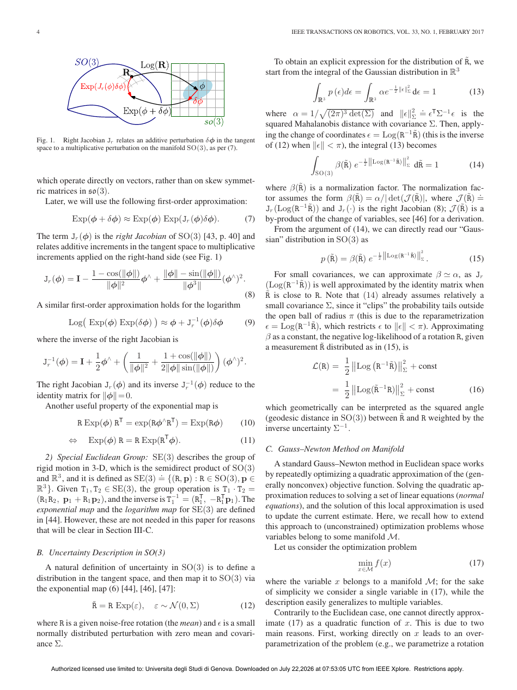

On-Manifold Preintegration for Real-Time Visual-Inertial Odometry
§1 Paper Information
1.1 Metadata
| Title | On-Manifold Preintegration for Real-Time Visual-Inertial Odometry |
| Authors | Christian Forster, Luca Carlone, Frank Dellaert, Davide Scaramuzza |
| Affiliation | University of Zurich (Forster, Scaramuzza); MIT LIDS (Carlone); Georgia Tech (Dellaert) |
| Venue | IEEE Transactions on Robotics (TRO) |
| Year | 2017 · Vol. 33, No. 1, Feb. 2017 (received Dec 2015, accepted Jun 2016) |
| DOI | 10.1109/TRO.2016.2597321 |
| Pages | 21 pages in PDF |
| Code | GTSAM 4.0 开源实现 |
1.2 TL;DR (Chinese Summary)
本文是视觉-惯性里程计(VIO)领域的奠基性理论论文。核心贡献有三：第一，在SO(3)旋转群的流形结构上严格推导了IMU预积分理论，避免了欧拉角等全局参数化的奇异性和非不变性；第二，给出了生成测量模型与旋转噪声(右乘噪声)的形式化分析，推导了优化所需全部Jacobian(残差、噪声传播、后验bias校正)的解析表达式；第三，将预积分IMU模型无缝融入因子图框架，结合structureless视觉模型(iSAM2增量平滑)，实现100Hz全平滑且精度超越同时代最优方法。该理论已成为VINS-Mono、ORB-SLAM3等系统的标配组件。
1.3 Tags
VIOIMU PreintegrationSO(3) ManifoldFactor GraphsIncremental SmoothingSensor FusionMAP Estimation1.4 本地证据
本页依据同目录 PDF 逐页提取生成；PDF 共 21 页，代表图来自第 4 页。所有结论均限定在论文陈述及其评测范围内。
查看本地 PDF 原文证据 (Abstract)
Current approaches for visual-inertial odometry (VIO) are able to attain highly accurate state estimation via nonlinear optimization. However, real-time optimization quickly becomes infeasible as the trajectory grows over time; this problem is further emphasized by the fact that inertial measurements come at high rate... Our first contribution is a preintegration theory that properly addresses the manifold structure of the rotation group. ... The second contribution is to show that the preintegrated IMU model can be seamlessly integrated into a visual-inertial pipeline under the unifying framework of factor graphs.
§2 Core Insight & Novelty
Q: IMU预积分到底解决了什么根本问题？为什么必须在流形上进行？
A: 核心洞察可总结为两句话：(1) "把高频IMU测量从绝对状态依赖变成相对运动约束"——传统IMU积分结果依赖于积分的初始状态(位姿、速度)，优化迭代改变初始状态时必须重新积分所有IMU测量(计算灾难)。预积分通过巧妙的参数重定义(Lupton & Sukkarieh的原始idea)，将IMU测量压缩为与初始状态无关的相对增量，从而在优化迭代中无需重新积分。(2) "旋转是流形，不能当欧氏向量处理"——Lupton & Sukkarieh的原始预积分使用欧拉角表示旋转，在参数平均和协方差传播中违反了SO(3)的几何结构。本文在SO(3)流形上严格推导了指数/对数映射、右Jacobian、不确定性传播和Gauss-Newton优化，使得预积分在几何上严格正确，从而获得了比欧拉角方案更高的精度和鲁棒性。
2.1 灵感到洞察映射表
| 灵感来源 | 核心洞察 | 具体体现 |
|---|---|---|
| Lupton & Sukkarieh 2012 [2] 的IMU预积分原始思想 | 将IMU测量重新参数化为与起始状态无关的相对量，避免每次优化迭代重积分 | 定义 $\Delta R_{ij} \doteq R_i^T R_j$ 等相对增量，使预积分结果仅取决于IMU测量本身 |
| Riemannian几何中SO(3)的流形结构 | 旋转不是欧氏向量，必须在切空间(李代数)中做加减，在流形上做乘法更新 | 使用 $\text{Exp}(\phi)$ 和 $\text{Log}(R)$ 在SO(3)与 $\mathbb{R}^3$ 之间映射；用右Jacobian $J_r$ 关联加性扰动与乘性扰动 |
| 因子图与增量平滑 (iSAM2) | 将预积分IMU约束和视觉约束统一表达为因子图中的因子，利用贝叶斯树的增量更新只重新优化受影响变量 | 每个预积分IMU测量变为连接两个关键帧状态的单一因子 |
| Structureless视觉模型 (MSC-KF) | 3D路标点不是必须的优化变量，可通过Schur补边缘化消除 | 在因子图中实现structureless vision factor，每次增量平滑时消去全部3D点 |
2.2 创新点卡片
① SO(3)流形上的严格预积分理论
② 预积分IMU模型的因子图集成与增量平滑
③ 解析Jacobian的完整推导与开源实现
§3 System Architecture
3.1 VIO Pipeline Overview
① 传感器数据采集 Sensors
② 前端处理 Frontend
③ 因子图构建 Factor Graph
④ 增量MAP优化 iSAM2
3.2 系统流程图
图像帧 @10-30Hz"] --> B["🔍 前端处理
特征检测 + 关键帧选择"] C["⚡ IMU传感器
陀螺仪+加速度计 @100-1000Hz"] --> D["📐 IMU预积分
SO(3)流形上积分 → ΔR,Δv,Δp"] B --> E["🧩 因子图构建"] D --> E E --> F["🔗 预积分IMU Factor
二元因子: f(xᵢ, xⱼ)"] E --> G["👁 Structureless Vision Factor
边缘化3D点后的视觉约束"] E --> H["🎯 Prior Factor
初始状态先验 p(X₀)"] F --> I["🌳 iSAM2 贝叶斯树
增量平滑优化"] G --> I H --> I I --> J{"受影响变量子集?"} J -->|是| K["🔄 重线性化
只更新贝叶斯树局部子图"] J -->|否| L["⏭ 跳过"] K --> M["📊 流形Gauss-Newton
lift-solve-retract循环"] L --> M M --> N["🎯 MAP状态估计
R,p,v,b @100Hz"] style A fill:#fff7ed,stroke:#fed7aa style C fill:#f0ebfd,stroke:#8b5cf6 style N fill:#ecfdf5,stroke:#bbf7d0
3.3 因子图模型详图
R₀,p₀,v₀,b₀")) --> P0["Prior"] X0 --> IMU1["IMU Factor
ΔR₀₁,Δv₀₁,Δp₀₁"] IMU1 --> X1(("x₁
R₁,p₁,v₁,b₁")) X1 --> IMU2["IMU Factor
ΔR₁₂,Δv₁₂,Δp₁₂"] IMU2 --> X2(("x₂
R₂,p₂,v₂,b₂")) X0 --> VF0["Vision Factors (structureless)"] X1 --> VF1["Vision Factors (structureless)"] X2 --> VF2["Vision Factors (structureless)"] VF0 -.-> L1(("l₁")) VF0 -.-> L2(("l₂")) VF1 -.-> L1 VF1 -.-> L3(("l₃")) VF2 -.-> L2 VF2 -.-> L3 end style X0 fill:#e8f0fe,stroke:#3b82f6 style X1 fill:#e8f0fe,stroke:#3b82f6 style X2 fill:#e8f0fe,stroke:#3b82f6 style L1 fill:#fef3c7,stroke:#f59e0b,stroke-dasharray: 5 5 style L2 fill:#fef3c7,stroke:#f59e0b,stroke-dasharray: 5 5 style L3 fill:#fef3c7,stroke:#f59e0b,stroke-dasharray: 5 5
注：实线节点为优化变量(关键帧状态 $x_i$)，虚线节点为被边缘化的3D路标点。
§4 Research Task
4.1 问题形式化：MAP视觉-惯性状态估计
给定IMU和相机的测量集合 $Z_k = \{C_i, I_{ij}\}_{(i,j)\in K_k}$ 以及初始先验 $p(X_0)$，求关键帧状态 $X_k = \{x_i\}_{i\in K_k}$ 的最大后验估计：
$$ X_k^* = \arg\max_{X_k} \; p(X_k \mid Z_k) \propto p(X_0) \prod_{(i,j)\in K_k} p(I_{ij} \mid x_i, x_j) \prod_{i\in K_k} \prod_{l\in C_i} p(z_{il} \mid x_i) $$其中每个关键帧状态 $x_i$ 包含IMU的朝向、位置、速度和偏置：
$$ x_i \doteq [R_i,\; p_i,\; v_i,\; b_i], \quad R_i \in SO(3),\; b_i = [b_i^g\; b_i^a] \in \mathbb{R}^6 $$IMU测量模型(在机体坐标系B下)：
$$ _B\tilde{\omega}_{WB}(t) = {}_B\omega_{WB}(t) + b^g(t) + \eta^g(t) $$ $$ _B\tilde{a}(t) = R_{WB}^T(t)(_W a(t) - {}_W g) + b^a(t) + \eta^a(t) $$4.2 输入/输出规范
| 维度 | 规范 |
|---|---|
| 传感器输入 | 单目相机图像序列 $C_i$ + 三轴陀螺仪和加速度计测量 $\tilde{\omega}, \tilde{a}$（@100–1000Hz） |
| 标定先验 | 相机-IMU外参 $T_{BC}$（已知）、相机内参 $K$（已知）、IMU噪声参数 |
| 输出状态 | 所有关键帧的6-DoF位姿 $R_i, p_i$ + 速度 $v_i$ + IMU偏置 $b_i^g, b_i^a$（度量尺度） |
| 优化变量 | 仅关键帧状态 $X_k$（3D路标点通过structureless factor边缘化消除） |
| 不可观方向 | 全局位置(3-DoF)和绕重力方向的旋转(yaw, 1-DoF)，共4个不可观方向 |
| 实时性 | 100Hz全平滑（MAP估计），因子图增量更新仅处理受影响子图 |
§5 Key Challenges
VIO面临的核心矛盾是"精度与实时性的不可调和冲突"。非线性优化(full smoothing)精度最高，但变量数随轨迹和IMU采样率快速增长——IMU在100–1000Hz下产生海量测量，若每个样本都成为优化变量，优化问题规模几分钟内就会超出实时处理的极限。滤波方法通过边缘化保持计算量恒定，但代价是线性化误差累积和滤波器不一致性(尤其yaw方向)。固定滞后平滑在两者间折中，但窗口长度的选择缺乏原则性指导。预积分理论的本质是找到一种数据压缩方式——将数百个IMU测量压缩为一个约束——在不丢失关键信息的前提下将问题规模从 $O(N_{IMU})$ 降为 $O(N_{keyframes})$。
5.1 先前方法对比
| 方法类别 | 代表工作 | 核心策略 | 主要局限 |
|---|---|---|---|
| 滤波方法 | MSC-KF, OC-EKF, ROVIO | 只估计最新状态，通过随机克隆和边缘化限制计算量 | 线性化误差累积导致不一致性；yaw方向错误可观性；外点不可逆 |
| 固定滞后平滑 | OKVIS, Wu et al. | 优化滑动窗口内最近若干状态，边缘化窗口外状态形成先验 | 边缘化产生稠密先验；仍受线性化误差影响；窗口长度需手动调整 |
| 全批平滑 | Strasdat, Indelman | 估计全部历史状态，精度最高 | 轨迹增长后不可实时；IMU高频使问题规模爆炸 |
| Lupton预积分 | Lupton & Sukkarieh 2012 | 首次提出预积分概念 | 使用欧拉角(奇异、非不变)；噪声传播和Jacobian缺乏形式化处理 |
| 本文方法 | Forster et al. 2017 | SO(3)流形上严格预积分 + 因子图集成 + iSAM2 + structureless视觉 | 对IMU噪声/偏置模型的依赖；初始偏置估计不准时校正可能有残留误差 |
5.2 三个核心挑战
| # | 挑战 | 详细分析 | 本文解决方案 |
|---|---|---|---|
| 1 | 高频IMU测量导致优化维度爆炸 | IMU 100–1000Hz vs 相机10–30Hz，一分钟后优化变量可达数万个，图优化复杂度 $O(K^3)$ 完全不可实时。 | 预积分压缩：将关键帧间数百次IMU测量整合为三个增量，变量数从 $O(N_{IMU})$ 降至 $O(N_{keyframes})$（降低10–100倍）。 |
| 2 | 旋转的流形结构使欧氏空间方法失效 | $R \in SO(3)$ 是3维流形嵌入在$\mathbb{R}^{3\times3}$中。用欧氏向量做加减运算和协方差传播在数学上不封闭。 | 流形上的概率建模：用右Jacobian $J_r(\phi)$ 关联切空间扰动与流形更新；使用lift-solve-retract的Gauss-Newton优化策略；协方差传播在切空间中进行(欧氏运算)，然后通过指数映射推回流形。 |
| 3 | 偏置更新后预积分需要重新校正 | 预积分结果依赖于积分时使用的偏置估计。优化迭代中偏置更新后，若每次重新积分全部原始IMU数据，预积分优势即刻丧失。 | 一阶bias校正：推导预积分增量对偏置变化的解析Jacobian，用一阶近似快速更新无需重新积分。 |
§6 Method Details
6.1 核心公式组
6.2 关键参数表
| 参数 | 符号 | 典型值/含义 | 影响 |
|---|---|---|---|
| 陀螺仪噪声密度 | $\sigma_g$ | 0.001–0.01 rad/s/√Hz | 决定旋转预积分短期精度 |
| 加速度计噪声密度 | $\sigma_a$ | 0.01–0.1 m/s²/√Hz | 决定速度和位置预积分短期精度 |
| 陀螺仪偏置随机游走 | $\sigma_{b^g}$ | 10−⁴–10− rad/s²/√Hz | 偏置漂移越大预积分长期精度越差 |
| 加速度计偏置随机游走 | $\sigma_{b^a}$ | 10−⁴–10−² m/s³/√Hz | 对位置预积分的二阶影响 |
| 关键帧选择间隔 | $\Delta t_{ij}$ | 0.5–2.0 sec | 太短：变量多；太长：bias漂移累积 |
| 重力向量 | $g$ | [0, 0, -9.81] m/s² | 使roll和pitch可观 |
| 切空间扰动 | $\delta\phi$ | 小量(优化迭代中) | $J_r(\phi)$决定扰动如何映射到旋转乘法更新 |
§7 Underlying Principles
7.1 流形上的优化原理
旋转矩阵 $R$ 有9个元素但只有3个自由度。直接在 $\mathbb{R}^9$ 中优化：(1)法方程严重欠定(Hessian秩为3而非9)；(2)每次更新后 $R$ 离开SO(3)流形，不再是有效旋转矩阵。流形优化(lift-solve-retract)完美解决：
- Lift：将当前估计通过retraction映射到切空间，定义正确维度的优化变量 $\delta\phi \in \mathbb{R}^3$
- Solve：在切空间(欧氏空间)中构造二次近似并求解标准法方程 $\mathbf{H}\delta x = -\mathbf{b}$
- Retract：用retraction将切空间更新映射回流形：$R \leftarrow R\,\text{Exp}(\delta\phi)$
7.2 预积分的重参数化不变性原理
预积分最深刻的洞见来自一个简单的代数变换：
$$ R_i^T R_j = R_i^T (R_i \Delta R_{ij}^{(i)}) = \Delta R_{ij}^{(i)} $$这意味着：如果在积分时把旋转测量都转换到 $t_i$ 时刻的IMU坐标系(而非世界坐标系)，那么积分结果就与 $R_i$ 无关。这就是"预"的含义——可以在看到 $R_i$ 的优化结果之前就完成积分。
❌ 传统IMU积分(状态依赖)
$R_j = R_i \prod_k \text{Exp}(\omega_k \Delta t)$
$R_i$ 一变所有都要重算
每次迭代：O($N_{IMU}$)重积分
✅ 预积分(状态无关)
$\Delta R_{ij} = \prod_k \text{Exp}((_B\omega_k - b^g)\Delta t)$
仅依赖IMU测量和bias
每次迭代：O(1)一阶bias校正
7.3 Structureless视觉模型的边缘化原理
标准BA中每个3D路标点是一个独立优化变量(数千到数万个)。Structureless模型的洞察：我们不需要路标点的精确位置，只需要"路标点提供的、关于相机位姿之间相对约束的信息"。通过Schur补边缘化，将路标点从优化中消除，将视觉信息压缩为相机位姿之间的直接约束——与预积分将IMU测量压缩为关键帧间约束异曲同工。
§8 Representative Figures
8.1 Figure 1: 右Jacobian的几何意义

核心信息：该图展示了SO(3)预积分中最关键的一个几何关系：切空间中的加性扰动 $\delta\phi$ 如何通过右Jacobian $J_r(\phi)$ 映射为流形上的乘性扰动 $\text{Exp}(J_r \delta\phi)$。
- 切空间与流形：SO(3)是一个3维光滑流形，每个点的切空间是一个3维欧氏向量空间
- 右Jacobian的作用：$J_r(\phi)$ 将切空间中的小扰动"弯曲"为适应流形曲率的形式。$\phi=0$ 时 $J_r = I$；$\phi$ 越大，流形的曲率效应越显著
- 工程意义：Gauss-Newton优化中每次迭代在切空间中求解更新量，然后用 $R \leftarrow R\,\text{Exp}(\delta\phi^*)$ 更新旋转矩阵
8.2 传感器坐标系统
- IMU-Body一致性：论文假设IMU坐标系B与机体坐标系重合(IMU测量的是机体自身的角速度和加速度)
- 相机-IMU外参 $T_{BC}$：需通过离线标定(如Kalibr)获得，运行时保持不变
- 世界坐标系W：通常取初始时刻的重力对齐坐标系，初始yaw和位置可任意设定(不可观方向)
§9 Potential Flaws & Boundaries
9.1 方法局限性
| # | 局限 | 详细分析 | 严重程度 |
|---|---|---|---|
| 1 | Bias校正的一阶近似精度有限 | 偏置估计变化较大时(如初始化阶段)，一阶Taylor截断误差不可忽略。论文验证了校正精度但未提供二阶机制的误差界。 | ★★★☆☆ |
| 2 | 未解决全局回环问题 | 本文聚焦局部VIO(开环轨迹)，预积分本身不处理回环检测和全局一致性。因子图框架可自然支持回环约束加入，但论文实验限于局部精度比较。 | ★★★☆☆ |
| 3 | 对IMU噪声/偏置模型的强依赖 | 若实际IMU噪声特性与模型不符(温度引起的非白噪声、冲击引起的非高斯噪声)，协方差估计将不准确。低端MEMS与高端IMU的噪声差异可达数量级。 | ★★★★☆ |
| 4 | Structureless模型的信息损失 | 边缘化3D点丢弃了路标点的显式位置，无法可视化地图或利用路标点间的几何约束。 | ★★☆☆☆ |
| 5 | 初值敏感性 | Gauss-Newton对初值敏感。若视觉初始化和IMU偏置初始估计偏离真值较大，可能收敛到局部极小值。 | ★★★☆☆ |
9.2 数据敏感性分析
| 数据维度 | 敏感性 | 说明 |
|---|---|---|
| IMU噪声密度参数 | ★★★★★ | 直接决定预积分协方差传播；参数错误导致IMU/视觉约束权重失配 |
| 相机-IMU时间偏移 | ★★★★★ | 即使1ms级同步误差在高动态运动中也会引入严重的系统性误差 |
| 相机-IMU外参标定精度 | ★★★★★ | 外参平移误差直接影响加速度计的世界系投影，旋转误差导致IMU/视觉不一致 |
| 关键帧选择策略 | ★★★☆☆ | 影响预积分时长(bias校正精度)和图密度(优化效率) |
| 场景纹理与光照 | ★★★★☆ | 视觉特征缺失时IMU独自承担，漂移迅速增大；视觉恢复后需重新收敛 |
9.3 扩展方向
- 学习型IMU噪声建模：用神经网络学习IMU的实际噪声特性(温度效应、非线性失真等)，替代固定的高斯白噪声假设，使协方差估计更精准。
- 多IMU预积分：现代设备常搭载多个IMU，联合预积分可利用冗余IMU的几何约束提升精度。
- 事件相机+IMU预积分：事件相机的高时间分辨率(微秒级)与IMU天然匹配，但异步稀疏特性需要全新的预积分理论。
9.4 深度追问
如果IMU在运行中断电重启，预积分框架能否继续工作？答案取决于重启后的偏置状态。IMU重启后偏置通常跳变(温度微小变化即可引起10–50%偏移)，远超一阶校正的适用范围。正确做法：在重启时刻插入新关键帧，终止重启前预积分约束，从新偏置开始全新预积分。这需要系统加入IMU健康监测和重启检测逻辑——是当前VIO系统工程实践中常被忽视的鲁棒性问题。
§10 Motivation & Research Value
10.1 五步推导链
| 步 | 推导 | 详细论证 |
|---|---|---|
| ① | 非线性优化VIO精度最高，但变量爆炸使其无法实时 | 全平滑方法精度优于滤波和固定滞后平滑(反复重线性化)，但IMU 100–1000Hz意味着1分钟内有6K–60K个状态变量 |
| ② | 数据压缩是唯一出路：必须将高频IMU测量压缩为低频约束 | 既然相机关键帧已将视觉信息从像素级(MHz)降至帧级(10–30Hz)，IMU也应用类似策略 |
| ③ | 传统IMU积分依赖初始状态，优化迭代时需反复重积分 | $R_j = R_i \prod \text{Exp}(\omega_k \Delta t)$ 依赖 $R_i$，优化迭代中 $R_i$ 不断变化 |
| ④ | 预积分的重参数化使积分结果与初始状态解耦 | 定义 $\Delta R_{ij} = R_i^T R_j$ 在 $t_i$ 机体坐标系中表达，计算只依赖原始IMU测量，与 $R_i$ 完全无关 |
| ⑤ | 必须用流形上的正确工具处理旋转：欧氏近似不够 | 本文在SO(3)流形上严格推导了预积分的每一个环节，使得理论在几何上完整且正确 |
IMU预积分的诞生源于一个优雅的数学洞察：通过巧妙的坐标系选择将"状态依赖的积分"变为"状态无关的增量"，使得高频IMU测量可以被一次性压缩并融入因子图优化，在不牺牲非线性优化精度的前提下实现实时VIO。
10.2 如何独立到达这个想法
- 认识问题：全平滑VIO的瓶颈在IMU测量产生的状态变量数量——这是数据压缩问题而非优化算法问题
- 寻找类比：参考"IMU机械编排"中的圆锥误差/划桨误差补偿算法
- 数学突破：关键的代数变换 $R_i^T R_j = \prod \text{Exp}(\omega_k \Delta t)$ 而非 $R_j = R_i \prod \text{Exp}(\omega_k \Delta t)$，将 $R_i^T$ 从右边移到左边实现状态解耦
- 流形升级：认识欧拉角/轴角的局限，转而寻求SO(3)流形上的一致性工具
§11 Key Takeaways
11.1 Lessons Learned
- 方法论层面：预积分的核心思想——"数据压缩+状态无关的重参数化"——是可迁移到任何高频传感器融合场景的方法论。类似思想可用于激光雷达里程计、事件相机、甚至多UAV间相对观测压缩。关键是找到使压缩测量不依赖于会在优化中变化的变量的参数化方式。
- 技术技巧层面：(1) SO(3)上的Gauss-Newton"lift-solve-retract"是任何涉及旋转优化的标准范式；(2) 解析Jacobian推导虽繁琐但使优化收敛更快、数值更稳定——工程实践中这是系统是否鲁棒的关键；(3) 因子图增量更新(iSAM2贝叶斯树)与预积分是绝配。
- 实验/写作层面：本文结构堪称典范：理论部分(III-VII)和实验部分(VIII)严格分离，附录承载全部冗长推导使正文保持简洁。"正文讲清原理和贡献+附录承载全部工程细节"的组织方式值得借鉴。
11.2 Directly Applicable to UAV Research
- UAV VIO系统的核心组件：若UAV需要GPS拒止环境下的精确状态估计，IMU预积分是必不可少的。可复用GTSAM 4.0开源实现或参考VINS-Mono/ORB-SLAM3的工程版本。
- 多传感器融合的框架迁移：因子图适合UAV的"相机+IMU+GPS+气压计+磁力计+..."多传感器融合。预积分思想可用于其他高频传感器(GPS RTK、UWB测距等)的压缩。
- 流形优化在UAV姿态控制中的应用：lift-solve-retract范适用于UAV的姿态规划和控制(SE(3)上的轨迹优化)，避免四元数/欧拉角的种种陷阱。
- Structureless model对多UAV的启示：多UAV协同SLAM中，每个UAV对其他UAV的观测可建模为structureless factor——边缘化被观测UAV的轨迹只保留对观测者位姿的约束，大幅压缩优化变量维度。
11.3 Key References to Follow
| # | Reference | Why Follow |
|---|---|---|
| 1 | Lupton & Sukkarieh, 2012 — "Visual-inertial-aided navigation..." (TRO) | IMU预积分的开山之作。对比本文可看出"从idea到完整理论"的演进过程。 |
| 2 | Kaess et al., 2012 — "iSAM2: Incremental smoothing and mapping..." (IJRR) | iSAM2增量平滑的完整理论。理解贝叶斯树结构对理解整个系统至关重要。 |
| 3 | Mourikis & Roumeliotis, 2007 — "A multi-state constraint Kalman filter..." (ICRA) | MSC-KF是structureless视觉模型的起源，也是本文对比的baseline。 |
| 4 | Qin et al., 2018 — "VINS-Mono: A robust and versatile monocular VIO" (TRO) | 将预积分理论实用化的最成功系统之一。 |
| 5 | Barfoot, 2017 — "State Estimation for Robotics" (Book, Cambridge) | 系统介绍李群/流形上的状态估计理论，是理解本文所有SO(3)/SE(3)几何操作的完整背景。 |
| 6 | Leutenegger et al., 2015 — "Keyframe-based VIO using nonlinear optimization" (IJRR) | OKVIS是本文同期竞争工作，比较两者有助于理解不同后端选择的设计权衡。 |